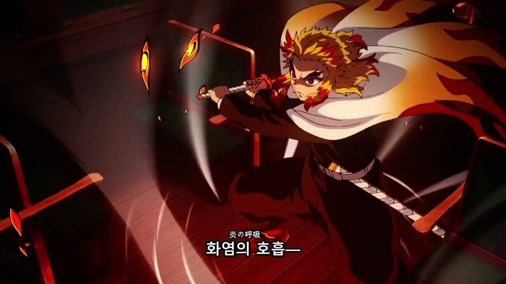

화염의 호흡 제 1형
제1의 형 「부지화」
돌격하여 횡으로 베어내는 공격. 부지화(시라누이)란 규슈 앞바다에 나타난다는 불꽃 같은 신기루를 뜻한다. 극장판에서는 여러 개의 불꽃 신기루가 모여 일렬로 켜지는 효과가 추가되었다. 히노카미 혈풍담에서는 렌고쿠 쿄쥬로의 개방 평타로 사용된다.

돌격하여 횡으로 베어내는 공격. 부지화(시라누이)란 규슈 앞바다에 나타난다는 불꽃 같은 신기루를 뜻한다. 극장판에서는 여러 개의 불꽃 신기루가 모여 일렬로 켜지는 효과가 추가되었다. 히노카미 혈풍담에서는 렌고쿠 쿄쥬로의 개방 평타로 사용된다.
원형의 궤적을 그리며 검을 위로 올려 베는 기술. 참격이 해의 테두리처럼 나타난다. 히노카미 혈풍담에서는 렌고쿠 쿄주로의 호흡 기술로 사용되며 슈퍼 아머가 적용된다.
위에서 아래로 크게 내려 베는 기술. 원작에서 등장하지 않는 애니메이션 오리지널 기술이다. 의미는 한국에도 존재하는 사자성어인 기염만장(氣炎萬丈, 기세가 대단히 높음)에서 유래했으며, 공식 소설판에 의하면 작중 표기는 '丈'이 아니라 '象'이다. 발음도 원래 사자성어는 '키엔반죠'지만, 작중에서는 '키엔반쇼'라고 발음한다. 히노카미 혈풍담에서는 렌고쿠 쿄쥬로의 호흡 기술로 사용된다.
검을 전, 측방으로 호를 그리며 크게 휘둘러 광범위하게 방어하는 기술.
마치 큰 호랑이의 상을 연상시키는 육중한 참격을 넣는 기술. 원작에서는 호랑이 머리 부분만 나오는데 애니에서는 전신이 나와서 호랑이가 돌진하는 듯한 모습으로 표현되었다. 히노카미 혈풍담에서는 렌고쿠 쿄주로의 호흡 기술로 사용되며 물의 호흡 8의 형 용소와 같이 공중에서 사용할 경우 지면을 향해 발동되어 시야를 가릴 수 있다
도신과 몸에 화염 모양의 오라가 생기며 양손으로 쥔 검을 오른 어깨에 올리는 준비 자세를 취하고 땅이 파일 만한 파워로 그대로 초고속으로 돌진해 베어내는 화염의 호흡이며, 렌고쿠의 궁극기이자 최고 위력의 절기. 애니메이션 묘사로 불타오르는 화룡 형상의 검기가 쿄쥬로의 온몸을 휘감아 맹렬한 기세로 입을 벌린 뒤 그대로 잔불의 나선들이 거대한 화룡을 휘감고서 날아가는 연출이 추가되었다. 일격으로 구성된 화염의 호흡 품새 중에서 유일하게 한 호흡에 이격 이상의 공격을 구사해[27] 쿄쥬로의 말마따나 넓은 면적을 깎아내는 공격. 특히 마지막 참격의 경우 화력을 총동원, 칼날에서 어마어마한 불꽃이 치솟은 채 거대 불기둥이 뿜어져 나오는 수준으로 묘사된다. 다만 쿄쥬로가 아직 염주에 오르기 전, 하현 2 하이로의 목을 베었을 당시에는 전력을 담아낸 일격만으로 구성되었다. 잡지 연재 당시 불의 호흡의 오의라고 잘못 표기되었다가 단행본에서 수정되었다. 히노카미 혈풍담에서는 렌고쿠 쿄주로의 오의로 등장한다.